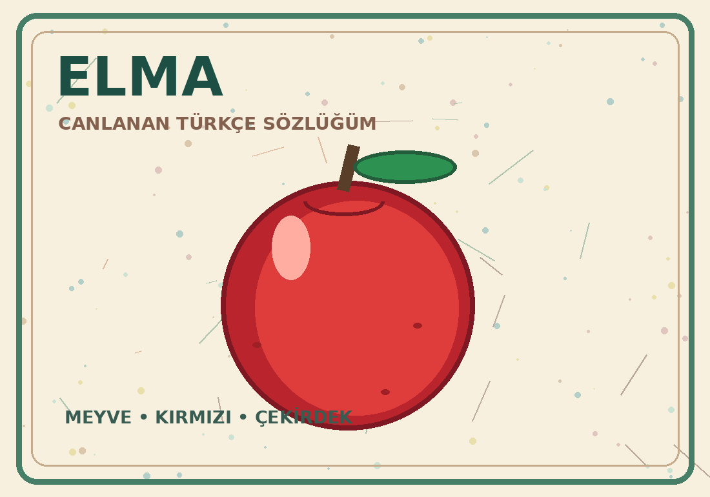

Elma Ağaç
AğaçÖnce basılabilir sayfaları yazdırın. Kamera sadece renkli resimleri tanır; QR kod kullanılmaz.
Kamerayı basılı Elma veya Ağaç resmine doğrult.
Kitaptaki Elma veya Ağaç resmini kameraya göster. Sözcükler canlansın!

ElmaAğaçÖnce basılabilir sayfaları yazdırın. Kamera sadece renkli resimleri tanır; QR kod kullanılmaz.